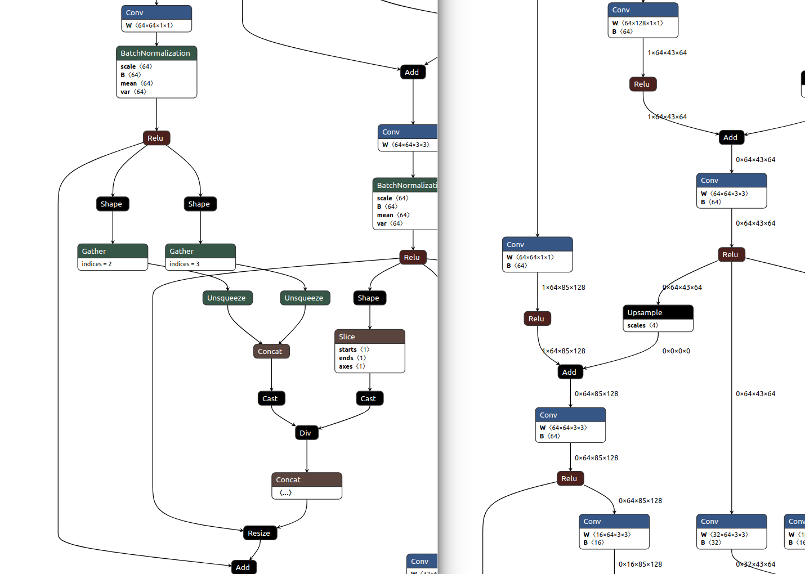

maskrcnn-benchmark转onnx再转TensorRT实录
本文介绍 maskrcnn-benchmark转onnx再转TensorRT实录
maskrcnn-benchmark转onnx再转TensorRT实录
This article was original written by Jin Tian, welcome re-post, first come with https://jinfagang.github.io . but please keep this copyright info, thanks, any question could be asked via wechat:
jintianiloveu
这篇文章将记录一下，如何通过onnx将maskrcnn模型转到tensorrt。到目前位置，我们基本上可以转到onnx，并通过onnxruntime得到正确的推理结果。但唯一不好的地方在于，无法转到tensorrt，问题主要在于：
- onnx为dynamic input的尺寸，这在TensorRT里面是无法支持的；
- 当你将输入尺寸固定之后，输出尺寸也随之固定了，这种情况下模型基本上无法推理。
针对这么一种情况，解决方案不是没有，但！
当我升级到TensorRT6.0和onnx-tensorrt对应的6.1的时候，惊奇的发现，dynamic的输入也是被支持的！！那么这个时候情况就变了哇！！我们接下来就从TensorRT6.0开始踩一踩坑！
-
遇到的第一个错误是这个：
While parsing node number 404 [Cast -> "407"]: --- Begin node --- input: "406" output: "407" name: "406" op_type: "Cast" attribute { name: "to" i: 1 type: INT } --- End node --- ERROR: onnx-tensorrt/builtin_op_importers.cpp:317 In function importCast: [8] Assertion failed: trt_dtype == nvinfer1::DataType::kHALF && cast_dtype == ::ONNX_NAMESPACE::TensorProto::FLOAT这告诉我们，Cast这个node在进行类型h转换的时候出现了错误，再看看onnx-tensorrt的源码
builtin_op_importers.cpp：1 2 3 4 5 6 7 8 9 10 11 12 13 14DEFINE_BUILTIN_OP_IMPORTER(Cast) { // Get input node. OnnxAttrs attrs(node); auto cast_dtype = attrs.get<int32_t>("to"); auto * tensor_ptr = &convertToTensor(inputs.at(0), ctx); auto trt_dtype = tensor_ptr->getType(); // TensorRT currently only supports the following conversion: FP16 -> FP32. ASSERT(trt_dtype == nvinfer1::DataType::kHALF && cast_dtype == ::ONNX_NAMESPACE::TensorProto::FLOAT, ErrorCode::kUNSUPPORTED_NODE); // Add the layer. nvinfer1::IIdentityLayer* layer = ctx->network()->addIdentity(inputs.at(0).tensor()); layer->setPrecision(nvinfer1::DataType::kFLOAT); RETURN_FIRST_OUTPUT(layer); } 这行assertion就是错误的根源，从这个函数来看，它是把FP16转到了FP32, 错误信息并没有告诉我们这个node是将哪个类型转到哪个类型。这个时候咋办？改源码吧，打印一下，它是从哪个类型转到哪个类型。
其实不用改源码，查看一下maskrcnn.onnx里面的每一个Cast大概既知道了：
node: 6622, op_type: Cast | input: ['6659'], output: ['6660'] input: "6659" output: "6660" name: "6622" op_type: "Cast" attribute { name: "to" i: 7 type: INT }它是将类型转换到INT！但是很显然，这里只支持转到FLOAT32！也即是说，这里的所有的Cast节点似乎都是错误的。因为他们应该转到FLOAT32或者直接去掉不用！
那就继续走这条路吧，解决一下datatype不对的问题。
Cast不支持转到INT64，怎么整？假设这个问题可以解决掉，接下来是第二个问题：
While parsing node number 413 [Resize -> "416"]: ERROR: /media/fagangjin/wd/permanent/software/source_codes/dl/onnx-tensorrt/builtin_op_importers.cpp:2270 In function importResize: [8] Assertion failed: scales.is_weights()可以看到，这里的resize是这样的：
node: 415, op_type: Resize | input: ['388', '415'], output: ['416'] input: "388" input: "415" output: "416" name: "415" op_type: "Resize" attribute { name: "mode" s: "nearest" type: STRING } node: 447, op_type: Resize | input: ['420', '447'], output: ['448'] input: "420" input: "447" output: "448" name: "447" op_type: "Resize" attribute { name: "mode" s: "nearest" type: STRING } node: 479, op_type: Resize | input: ['452', '479'], output: ['480'] input: "452" input: "479" output: "480" name: "479" op_type: "Resize" attribute { name: "mode" s: "nearest" type: STRING }可以看到，好像并没有scales 的 weights，resize没有scales参数，这个怎么整。
-
这是第二条线路，第二条线路是先简化模型，然后再convert。
但也遇到了本质上的问题，比如说，这个简化的原理，实际上是根据指定尺寸输入，中间层的一些Shape，Gather, Unsqueeze等都会成为Constant，这些Constant可以被优化掉，不信可以对比一下优化前后的两个图：

实际上，像Batchnorm这样的层被优化掉了，这个优化来自于官方的优化，optimize，其次类似于Shape、Gather、Unsqueeze这样的层，假如输入尺度确定之后，这些node的参数应该也是被确定的，因此可以直接用来存为Constant，当做常数来用。
但是这一套机制对于动态的输入并没有用。此时这条路应该是走不通的。
mmdetection导入onnx转TensorRT
上面路子行不通，尝试采用mmdetection导出的onnx，转trt。我们可以比较轻松地把里面的Batchnorm等层去掉，同时对模型进行一下抛光，但是当转到trt的时候，就会遇到各种各样的问题：
node: in: 3020;3029;3030;3028. out: 3031, op_type: Slice | input: ['3020', '3029', '3030', '3028'], output: ['3031']
input: "3020"
input: "3029"
input: "3030"
input: "3028"
output: "3031"
name: "in: 3020;3029;3030;3028. out: 3031"
op_type: "Slice"
比如说Slicenode会出现错误，而且这个错误是来自于这个：
ASSERT(input_name == "axes" || input_name == "steps", ErrorCode::kUNSUPPORTED_NODE);
完全不知所云啊，我们的slice好像并没有这么一个所谓的名字，所以就出现了错误。这就奇怪了，是我们导出的Slice有问题，还是啥问题，为什么onnxruntime里面能够推理，到了onnx-trt里面就不行了呢？
这样把，为了彻底搞明白这个问题，现在需要做一个实验，及调用一切可以用到的资源来进行onnx一个node的运算，这个我叫做元运算(unit onnx), 通过元运算，我们看看这么一个node到底是如何实现前向运算的。
为了解决上诉slice问题，我们修改onnx-trt的源码:
通过去掉这个assertion，把axes的assign加上，基本上可以解决这个问题了。那么第二个问题来了：
onnx-tensorrt/builtin_op_importers.cpp:2274 In function importResize:
[8] Assertion failed: scales.is_weights()
Resize导致的问题，要解决这个问题，深入研究一下先。
首先看一下这个Resize在onnx里面是如何定义：
Resize the input tensor. In general, it calculates every value in the output tensor as a weighted average of neighborhood (a.k.a. sampling locations) in the input tensor. Each dimension value of the output tensor is: output_dimension = floor(input_dimension * (roi_end - roi_start) * scale) if input “sizes” is not specified.
这个op，在opset10和opset11上是不一样的。输入输出不一样，这个就很蛋疼，说实话。
-
opset10里面的Resize：
# Inputs X scales # Outputs Y # Attributes mode (nearest, linear, bilinear) -
opset11里面的Resize:
# Inputs X roi scales sizes # Outputs Y # Attributes coordinate_transformation_mode cubic_coeff_a exclude_outside extrapolation_value mode nearest_mode
看到了吗？？？这个Resize在opset10和opset11上操作是不同的。当你把model里面的Resize打印出来之后：
input: "571"
input: "598"
output: "599"
name: "in: 571;598. out: 599"
op_type: "Resize"
attribute {
name: "mode"
s: "nearest"
type: STRING
}
[name: "mode"
s: "nearest"
type: STRING
]
571
598
看到了吗？这里的input没有名字，但是第二个，应该scales，如果我没有猜错的话。那么看看onnx-tensorrt里面是怎么暴力处理这个node的：
|
|
问题就出在这里了，这里的scales明明就是 inputs.at(1)第二个input没有错啊，但是判断 scales.is_weights()的时候不对了，那么我想知道，这个 is_weights到底是个啥子玩意？？
花了一点时间，开发了一个onnx模型的explore工具：https://github.com/jinfagang/onnxexplorer 磨刀不误砍柴工。接下来需要借助这个工具来解决一下Resize这个问题。简单的来说，解决Resize layer这个is_weights 判断问题。
首先我们用onnxexp 来看一下这个模型里面都有啥：
$ onnxexp bbb.onnx search -t 'Resize'
Exploring on onnx model: bbb.onnx
search node by ID: Resize
input: "542"
input: "569"
output: "570"
name: "in: 542;569. out: 570"
op_type: "Resize"
attribute {
name: "mode"
s: "nearest"
type: STRING
}
input: "571"
input: "598"
output: "599"
name: "in: 571;598. out: 599"
op_type: "Resize"
attribute {
name: "mode"
s: "nearest"
type: STRING
}
input: "600"
input: "627"
output: "628"
name: "in: 600;627. out: 628"
op_type: "Resize"
attribute {
name: "mode"
s: "nearest"
type: STRING
}
listed all 3 Resize nodes in detail.
搜索了一下，Resize的op也就三个，似乎不是什么大问题啊，这里对比一下yolov3.onnx里面的Resize node看看：
$ onnxexp yolov3.onnx search -t 'Resize'
Exploring on onnx model: yolov3.onnx
search node by ID: Resize
input: "model_1/leaky_re_lu_59/LeakyRelu:0"
input: "Resize_scales"
output: "model_1/leaky_re_lu_59/LeakyRelu:0_permuted_upsampled"
name: "Resize1"
op_type: "Resize"
attribute {
name: "mode"
s: "nearest"
type: STRING
}
doc_string: ""
domain: ""
input: "model_1/leaky_re_lu_66/LeakyRelu:0"
input: "Resize_scales"
output: "model_1/leaky_re_lu_66/LeakyRelu:0_permuted_upsampled"
name: "Resize"
op_type: "Resize"
attribute {
name: "mode"
s: "nearest"
type: STRING
}
doc_string: ""
domain: ""
listed all 2 Resize nodes in detail.
可以看到，它这个Resize的input比较正常一些，Resize_scales是输入的scales，我们看看这个scales到底是个啥？主要看看是不是weights。
经过一番debug之后，发现这个Resize的op似乎有点不太正常啊，并没有这个scales的输入，那咋办呢。其实这个scales的来源是有的，来自于concat的输出。
总结
最后总结一下，通过onnx转到maskrcnn存在以下问题：
- 一些支持的op比如Resize，并非真正的支持，Resize如果scales来自另外一个node的输出将不支持，只支持写死的scales参数；
- 一些层不支持如RoIAlign，这个层需要写Plugin去支持， 另外一些不支持的包括：
NonMaxSuppression, Equal, ReverseSequence(mmdet version only), NonZero，Scatter（fb version only)，；
解决办法和难点：
- 一些不支持的op如ROIAlign可以通过在onnx-tensorrt里面自己写importer来支持导入，然后根据inputs和outputs来编写逻辑，但对于一些已经被支持的层但无法处理特殊情况的op，无法debug到底正确操作应该是啥样的，比如onnx-tensorrt官方里面将Resize parse的时候第二个inputs parse为weights，这通常情况下是initializers，但模型里面来自于上一个node的输出，意味着这个层无法再转engine的过程中被构建。Slice层onnx-tensorrt在处理的时候会将一些位置参数按照标准格式来处理，但对于一些trace的模型一些参数的名称并非严格按照标准来的，通过修改onnx-tensorrt源码可以给它修改。
- 至少需要重写Resize层，增加ROIAlign，NMS，Nonzeros，Equal等层，工作量还是比较大。
- 原文作者：金天
- 原文链接：https://jintian93.github.io/post/2019_09_26_10_maskrcnn-benchmark%E8%BD%AConnx%E5%86%8D%E8%BD%ACTensorRT%E5%AE%9E%E5%BD%95/
- 版权声明：本作品采用知识共享署名-非商业性使用-禁止演绎 4.0 国际许可协议进行许可，非商业转载请注明出处（作者，原文链接），商业转载请联系作者获得授权。